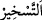

hükmü bulan müctehid isâbet etmiş, bulamayan da hatâ etmiştir. Ancak bulamayana da
bundan dolayı günah yazılmaz.
Eğer: “Her hâdisenin Allah katında belirli bir hükmü varsa, ictihad edip de bunun
aksini söyleyen, Allah’ın indirdiği ile hükmetmemiş demektir. Bu da onun fâsık ya da
kâfir olmasını gerektirir.” denilirse, biz buna şöyle cevap veririz: “Müctehid, zannına
göre hükmetmekle memurdur. Dolayısıyla hatâ da etse, Allah’ın indirdiği ile hükmetmiş
demektir.
Bahru’l-ulûm’da şöyle der: “Bu âyet, müctehidin hatâ da isâbet de edebileceğine
delildir. Oysa ictihada açık konularda doğru birdir. Şu halde bu iki ictihaddan her biri
doğru olsaydı, onlardan her biri doğruyu bulmuş ve anlamış olurdu. Süleyman (a.s.)’a
farklı bir anlayışın tahsisinin zikredilmesinin de bir anlamı olmazdı. Çünkü bu âyet,
onun verdiği hükmün kendi dışındakileri geçersiz kıldığına ve peygamberlerin de
âlimler gibi ictihâdları olduğura delâlet etmektedir. Yine eğer her müctehid isâbet etse,
hükmünde doğruyu olsaydı, bu durumda bir tek fiilin sıhhat ve fesad, vâcib ve mahzurlu,
mübah ve mümteni gibi birbirine ters vasıflara sâhip olması gerekirdi. Bu ise
imkansızdır.
Mesnevî’de der ki:
Yanılgıya ve yanlışa düşen vehimdir
Doğru kararlar verebilen ise sâdece akıldır
Müctehid nassı bildiği zaman
Artık bu durumda kıyası düşünmez
Bir konuda nas bulunmadığı durumda da
Kıyas yoluyla bir hükme varır
“Dâvud’a dağları ve kuşları boyun eğdirdik.” İtaatkâr kıldık. “ bir şeyi boyun
eğdirmek, itaatkâr kılmaktır. “Onunla beraber tesbih ediyorlardı.” Dağların tesbih
etmesinden maksad, orada bulunanların işiteceği şekilde Allah’ı takdis etmeleridir.
Çünkü nîmet bildirme makamına uygun olan budur. Yoksa Dâvud (a.s.)’ın sesinin
dağlardan aksetmesi değil. Çünkü sesin yansıması herkes için geçerlidir. Aynı şekilde
dağların tesbihinin hâl lisanı ile olduğunu söylemek de aynı şekildedir.
Burada “dağlar”, “kuşlar”dan önce zikredilmiştir. Çünkü dağların boyun eğdirilmesi
ve tesbîh etmesi, daha hayret verici, Allah’ın kudretine daha çok delâlet eden ve mûcize
olmaya daha uygundur. Çünkü onlar cansız, kuşlar ise canlı varlıklardır.
“(Bunları) biz yapmaktayız.” Size göre şaşılacak şeyler olsa da onları böylece
yapmaya biz kâdiriz.
Rivâyet edilir ki Allah Teâlâ, Dâvud (a.s.)’a tesbihte daha diri ve iştiyaklı olsun diye
dağların ve kuşların yanlarından geçerken onların tesbîhâtını işittirirdi.”
Kâşifî der ki: “Mü’minin dağların ve kuşların Dâvud (a.s.)’a uyarak Allah’ı tesbih
ettiklerine inanması gerekir. Rivâyete göre dağların ve kuşların tesbîhi ve sözleri tüm